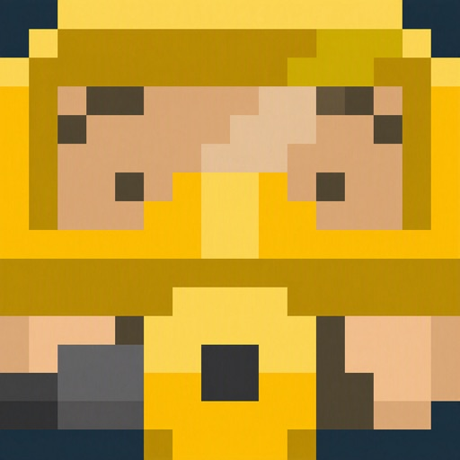
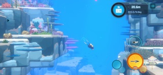

데이브더다이버모바일 다운로드 방법, PC판 세이브 그대로 이어할 수 있나요
2026년 9월 9일(수)에 넥슨 민트로켓이 데이브 더 다이버 전 세계 누적 판매 1000만 장 돌파를 공식 발표했어요. 국내에서 만든 싱글 패키지 게임 중에는 처음 나온 기록이라고 하더라고요. 그리고 그 여운이 채 가시기도 전인 9월 17일(목), 드디어 데이브 더 다이버 모바일판이 애플 앱스토어와 구글플레이 양대 마켓에서 동시에 정식 출시됐습니다.
저도 소식 듣자마자 스토어 페이지부터 열어봤는데요, 막상 받으려니 '다운로드는 어떻게 하는 거지', '얼마나 하는 거지', 그리고 가장 궁금했던 'PC로 하던 거 그대로 폰에서 이어할 수 있나' 이 세 가지가 한꺼번에 궁금해지더라고요. 참고로 이번 글은 제가 직접 오래 플레이해본 후기가 아니라, 앱스토어·구글플레이 공식 페이지와 민트로켓 공식 발표 기준으로 정리한 정보라는 점 먼저 밝히고 시작할게요. 그럼 궁금한 것부터 하나씩 짚어볼게요.
데이브더다이버모바일 어떻게 다운받나요
데이브 더 다이버 모바일은 애플 앱스토어와 구글플레이에서 '데이브 더 다이버'를 검색해 무료로 바로 설치할 수 있어요. 받는 순서는 딱히 어려울 게 없는데요, 정리하면 이렇습니다.
- ① 앱스토어(아이폰) 또는 구글플레이(안드로이드)에서 '데이브 더 다이버 모바일' 검색 후 설치 — 용량이 약 3.7GB라 저장공간 여유를 미리 확보해두는 게 좋아요
- ② 설치 후 바로 실행하면 초반 스토리와 탐험을 무료로 체험할 수 있고
- ③ 마음에 들면 인앱결제로 정식판 전체 콘텐츠 잠금을 해제하는 방식이에요

스토어에서 이 아이콘이 보이면 제대로 찾은 거예요
이미지 출처: 애플 앱스토어 공식 페이지 · 네이버 본문엔 받아서 재업로드 권장
저장공간만 넉넉하면 몇 분 안 걸려요
얼마나 들까요? 과금 구조는요
다운로드와 초반 체험까지는 완전히 무료고, 정식판 전체 콘텐츠를 열려면 인앱결제 9.99달러를 내면 됩니다. 가격 구성은 이래요.
- 다운로드·초반 체험 — 무료
- 정식판(전체 콘텐츠) 잠금 해제 — 인앱결제 9.99달러(앱스토어 실측 12,000원, 매체별로는 13,600원대로 보도되기도 해서 정확한 금액은 결제 직전에 스토어에서 확인하시는 게 정확해요)
- DLC '인 더 정글' — 별도 구매, 약 4.99달러(앱스토어 실측 7,700원대)
- '드렛지(Dredge)' 콜라보 콘텐츠 — 무료로 포함
과금 구조를 더 자세히 뜯어본 글은 예전에 따로 정리해둔 게 있어서, 궁금하신 분들은 아래 링크로 가서 보시면 좋을 것 같아요.
어떤 게임인가요
데이브 더 다이버는 낮에는 바다 '블루홀'을 탐험하며 해양 생물을 채집하고, 밤에는 그 재료로 초밥집을 운영하는 탐험·수집·경영이 결합된 어드벤처예요. 원작인 PC·콘솔판(스팀·PS·스위치·Xbox)이 3년째 꾸준히 팔리는 스테디셀러이고, 이번에 모바일로 옮겨오면서 같은 세계관을 폰에서도 즐길 수 있게 됐다고 보시면 됩니다. 자세한 시스템·조작 차이는 예전 글에서 더 깊게 다뤄뒀으니 그쪽을 참고하시는 게 좋아요.

낮엔 잠수, 밤엔 요리라니 은근 바쁜 게임이더라고요
이미지 출처: 애플 앱스토어 공식 스크린샷 · 네이버 본문엔 받아서 재업로드 권장
첫인상은 어때요
아직 정식으로 오래 잡고 플레이해본 건 아니라서, 공개된 정보 기준으로 말씀드릴게요. PC·콘솔판이 3년째 꾸준히 팔리고 이번에 누적 판매 1000만 장까지 넘긴, 이미 검증된 게임을 그대로 모바일로 옮겨왔다는 점에서 완성도는 기대해볼 만하다고 봐요. 다만 손끝으로 직접 만져보기 전까지는 터치 조작이나 UI가 실제로 얼마나 편한지는 저도 장담은 못 드리겠더라고요.
좋은 점과 아쉬운 점
좋은 점을 먼저 꼽아보면, PC·콘솔판 콘텐츠와 DLC, '드렛지' 콜라보까지 그대로 들고 왔다는 거예요.
- DLC '인 더 정글' 구매 가능(별도 결제)
- '드렛지' 콜라보 콘텐츠 무료 포함
- 자이로 센서 기울임 조작·3단계 시야 거리 설정·어인족 마을 빠른 이동 같은 모바일 전용 편의 기능 추가
아쉬운 점도 솔직히 말씀드릴게요.
- 정식판은 유료 잠금이라 전체 콘텐츠를 처음부터 다 즐기려면 결제가 필요하고
- PC·콘솔판과의 세이브 연동(크로스세이브) 여부는 아직 공식적으로 확인되지 않았다는 점이 가장 아쉬워요
- 용량도 3.7GB라 저장공간 여유는 미리 챙겨두는 게 좋겠더라고요
이런 분들께 추천해요
PC나 스위치, 플레이스테이션으로 이미 데이브 더 다이버를 즐기신 분이라면 밖에서도 이어서 즐기고 싶으실 텐데, 세이브가 그대로 넘어가는지는 아직 미확인이니 이 점만 감안하고 받으시면 좋겠어요. 반대로 처음 입문하시는 분께도 초반 무료 체험이 있어서 부담 없이 찍먹해보기 좋은 구조입니다.
자주 묻는 질문
Q. PC나 스위치, 플레이스테이션에서 하던 세이브를 모바일에서 그대로 이어할 수 있나요?
아직 공식적으로 확인된 바가 없어요. 앱스토어·구글플레이 페이지에도, 출시 관련 공식 발표에도 크로스세이브 관련 언급이 전혀 없어서, 지금은 PC판과 모바일판을 별개의 진행으로 보고 시작하시는 게 맞겠습니다. 확인되는 대로 이 글도 업데이트할게요.
Q. 안드로이드랑 아이폰 둘 다 받을 수 있나요?
네, 애플 앱스토어와 구글플레이 양대 마켓에서 9월 17일(목) 동시에 정식 출시됐기 때문에 두 플랫폼 모두 다운로드 가능해요.
Q. 광고가 나오거나 과금해야 유리한 구조(P2W)인가요?
보도 기준으로는 광고가 없고, 과금으로 게임 진행이 유리해지는 P2W 요소도 없다고 알려져 있어요. 결제는 정식판 콘텐츠 잠금 해제와 DLC 구매 정도로 한정된다고 보시면 됩니다.
Q. 모바일에서만 쓸 수 있는 조작이나 기능이 따로 있나요?
있어요. 자이로 센서로 기기를 기울여 조작하는 기능, 시야 거리를 3단계로 조절하는 옵션, 어인족 마을에서 빠르게 이동하는 기능까지 모바일 전용 편의 기능이 몇 가지 추가됐어요.
Q. 할인 중이라던데, 지금 사도 되나요?
9월 30일(수)까지 출시 기념 할인 판매 중이라는 보도가 있어요. 다만 할인 폭이 매체마다 다르게 나와서, 정확한 가격은 결제 직전에 스토어에서 직접 확인하시는 걸 추천드려요.
결국 다운로드 자체는 스토어에서 검색 한 번이면 끝나는 간단한 일이고, 과금 구조도 무료 체험 후 결제로 명확한 편이에요. 다만 PC·콘솔판 세이브를 그대로 이어갈 수 있는지는 아직 확인이 안 된 부분이니, 이미 PC로 열심히 키우신 분이라면 이 점만 염두에 두고 다운받아 보시면 좋을 것 같아요.
✔ 데이브 더 다이버 같이 보기 좋은 내용
· 데이브더다이버모바일 PC판이랑 뭐가 다를까, 조작방식부터 콘텐츠 차이까지 정리
· 데이브더다이버모바일 9월17일 출시 확정, 과금 구조는?
· 데이브더다이버모바일 사전예약 지금 받아야 하는 이유 출시일 과금구조까지
참고한 곳
· 데이브 더 다이버 모바일 - 애플 앱스토어
· 데이브 더 다이버 모바일 - 구글플레이